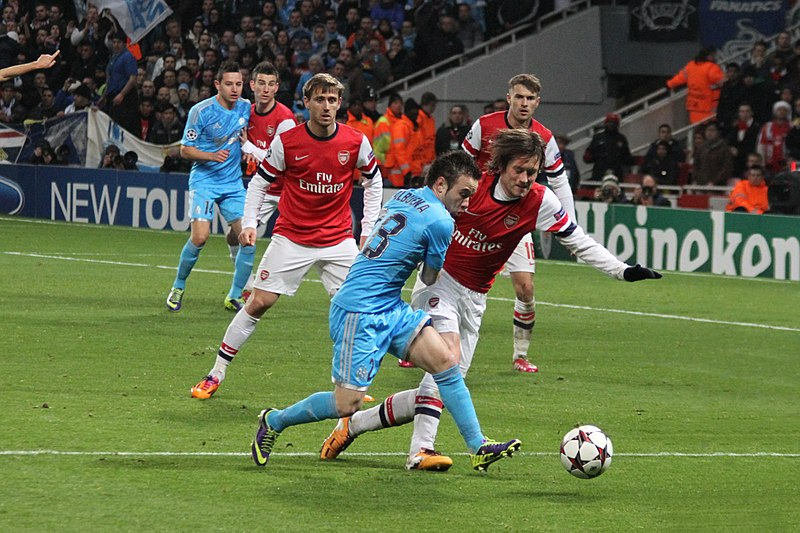

Shooting: Is used when you are close enough to the goal and you want to score for your team you shoot the ball.
Passing: Is used to pass the ball to a teammate so your team doesn’t get the ball taken away.
Defending: Is used when the opposing team is attacking the goal and you need to stop them, so you try to defend your goal so the ball doesn't go in.
Ronnie Macdonald - Wikimedia Commons - CC-BY
Headers: Are used when the ball is high in the air and you need to score or clear the ball away from the goal so you jump up and use your head to hit the ball away.